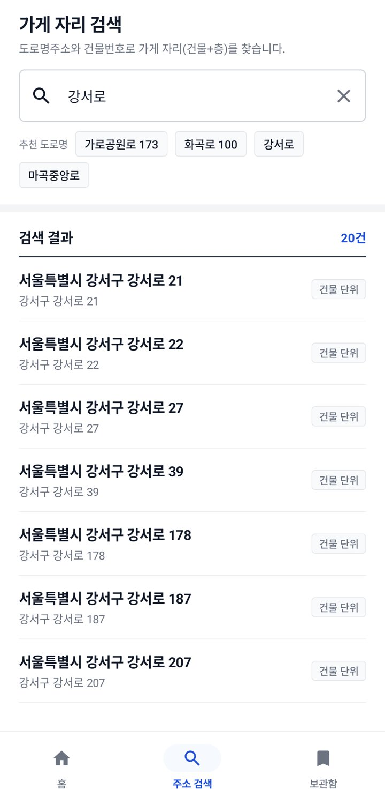
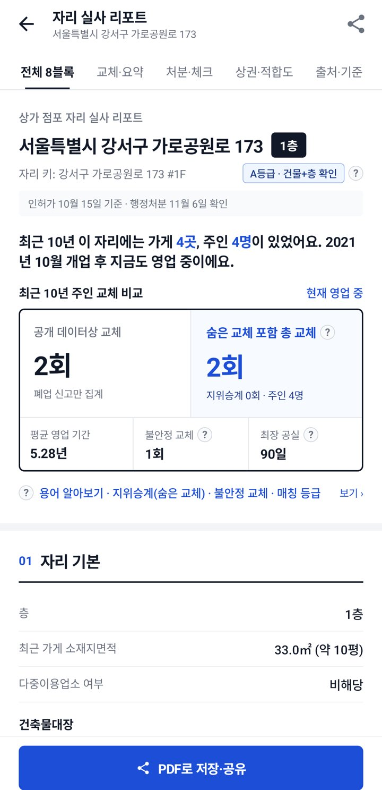
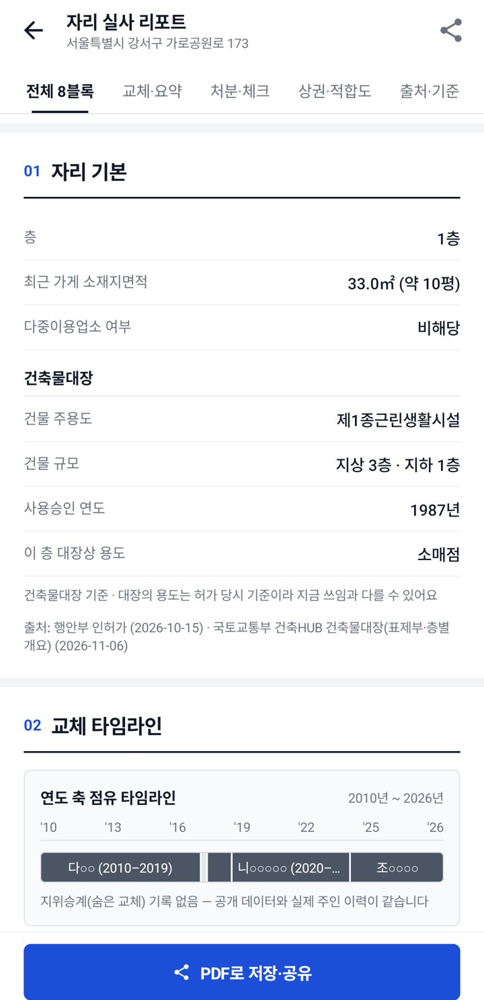
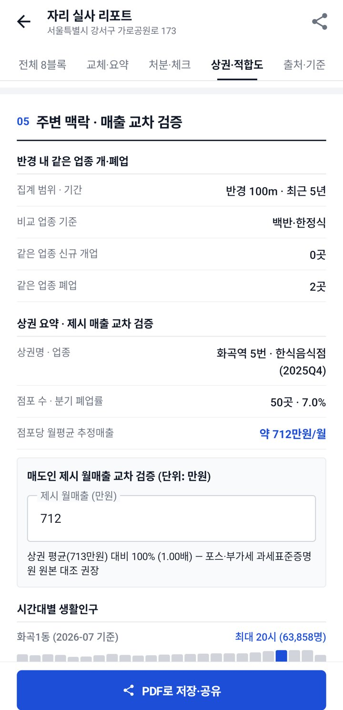
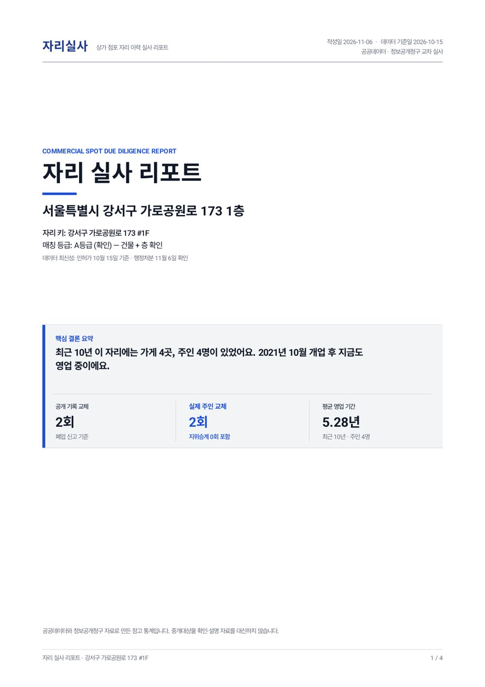
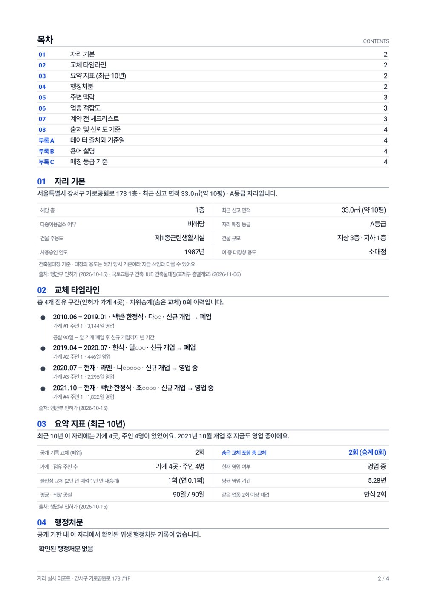

상가 자리 이력 실사 리포트 · Android 앱
건물과 층으로 묶은 가게 “자리”마다 개업·폐업·영업자 교체, 위생 행정처분, 건축물 정보, 주변 상권을 공공데이터로 모아 보여줍니다. 공개 데이터에서는 “한 가게가 6년 영업”으로 보이는 자리의 실제 주인 교체와 짧은 폐업까지 드러내는 것이 목표입니다.
| 서비스명 | 자리실사 |
|---|---|
| 형태 | Android 앱(개발 중, 앱스토어 공개 예정) · 자리별 리포트 PDF 저장·공유 |
| 이용자 | 예비 창업자, 가게 자리를 알아보는 임차인, 건물주, 상가 공인중개사 |
| 범위 | 서울 25개 구 식품 업종(일반음식점·휴게음식점·제과점) |
| 현재 제공 | 강서구 6,164개 자리 리포트 제공 중, 나머지 24개 구 데이터 수집 중 |
| 데이터 처리 | 서버에서 공공데이터를 주기적으로 수집해 자리별 리포트를 만들고, 앱은 완성된 리포트만 읽습니다. 상호는 가려서(예: 카○○○) 보여주고 대표자명·전화번호는 저장하지 않습니다. |
| 데이터 | 제공 기관 | 리포트에서 쓰는 곳 |
|---|---|---|
| 지방행정 인허가(일반·휴게음식점·제과점) | 행정안전부 | 개업·폐업·휴업 이력, 교체 타임라인 |
| 건축HUB 건축물대장정보 | 국토교통부 | 1블록 건물 주용도·층수·사용승인 연도·층별 용도 |
| 식품접객업 행정처분 결과 | 식품의약품안전처 | 4블록 행정처분 |
| 상권분석서비스 | 서울특별시 | 5블록 상권 점포 수·폐업률·추정매출 |
| 생활인구(행정동) | 서울특별시 | 5블록 시간대별 생활인구 |
| 도로명주소 DB | 행정안전부 | 주소 정리, 도로명 ↔ 지번 연결 |
| 영업자 지위승계 이력 | 각 구청(정보공개청구) | 공개 데이터에 보이지 않는 주인 교체 |
국토교통부 건축HUB 건축물대장정보 서비스(BldRgstHubService)를 리포트 1블록에 씁니다.
| 사용 기능 | getBrTitleInfo 표제부 — 주용도, 지상·지하 층수, 사용승인일 getBrFlrOulnInfo 층별개요 — 가게가 있는 층의 대장상 용도 |
|---|---|
| 조회 방식 | 인허가 주소를 도로명주소 DB로 시군구·법정동·번·지로 바꾼 뒤, 건물마다 표제부 1회와 층별개요 1회 이상 조회 |
| 호출 구조 | 서버에서 건물 단위로 받아 저장하고, 앱은 저장된 결과만 읽습니다. 앱 사용자가 늘어도 API 호출량은 늘지 않습니다. |
| 필요 호출량 | 서울 식품 업종 건물 약 108,000동 × 2회 ≈ 약 216,000회(첫 적재) 이후 신규 개업 건물 추가와 주기 갱신 |
| 현재 진행 | 강서구 4,237동 수집 완료(대장 확인 4,072동), 금천구 2,265동 수집 완료, 나머지 구는 일일 한도 안에서 순차 수집 중 |
트래픽 확대가 필요한 이유 — 개발계정 일일 한도로는 서울 전체 첫 적재에 2주 가까이 걸리고, 앱 공개 뒤에는 25개 구의 신규 건물과 대장 변경을 매일 반영해야 합니다.
Android 앱 실제 화면(강서구 실데이터). 상호는 가려서 표시합니다.





